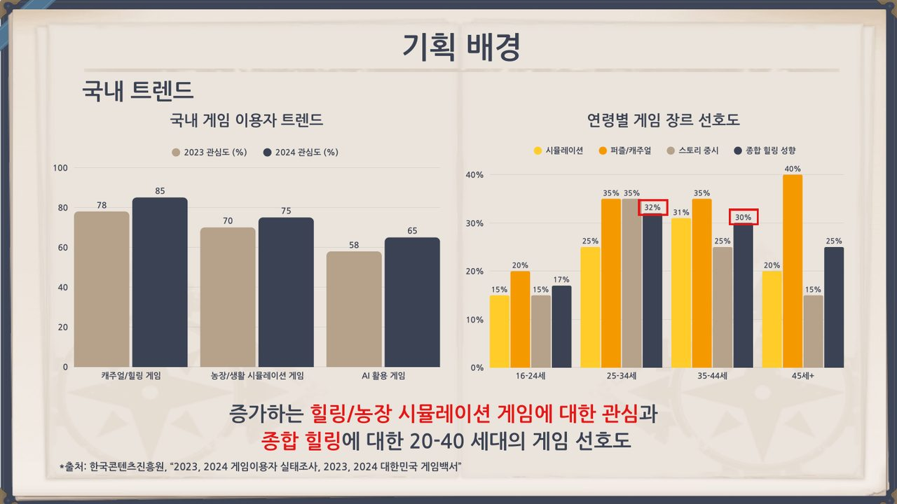
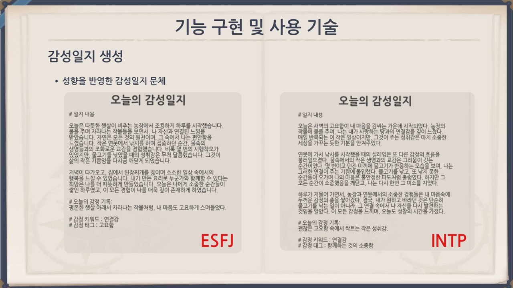

왜 이 프로젝트였나
한국 직장인의 높은 스트레스 경험률(62.1%)과 MZ세대 번아웃 경험률(43.9%)이라는 사회적 문제에서 출발했습니다. '농사 게임이 스트레스 해소에 도움이 된다'는 연구 결과를 기획 배경으로 삼아, 번아웃을 겪는 20~40대 직장인을 타깃으로 정의했습니다.
핵심 가설 — ① 감성 로그 기반 개인화 콘텐츠가 사용자의 몰입도를 높이고, ② 반복적인 게임 에셋 제작을 AI로 자동화하면 소규모 팀의 개발 생산성이 혁신적으로 높아진다.

기획부터 백엔드까지, 총괄 PM
게임 콘텐츠, 전체 시나리오(프롤로그~엔딩), 퀘스트 시스템, 아이템·세계관 기획
유저 관점의 게임 흐름도(UI Flow) 설계 및 키오스크·인게임 화면 UI 디자인
프로젝트 목표 설정, 스크럼 일정 관리, Jira 기반 Task·품질(QA) 관리
FastAPI 백엔드 서버 기본 구축, 유저 행동 로깅 시스템 설계, SFX 생성 모델(AudioGen 등) 테스팅
8주, 6단계로 만든 게임
- 문제 정의 및 타겟 설정번아웃을 겪는 20~40대 직장인 타깃팅
- 서비스 기획 및 흐름 설계'개인화·다양화·효율화'를 핵심 키워드로 사용자 여정(Journey) 정의
- 데이터 구조 · 기술 아키텍처AI 백엔드 서버(FastAPI) 구축 주도
- 핵심 기능 개발농사·낚시 등 기본 콘텐츠와 AI 기반 감성일지 자동 생성 시스템 구현
- 프론트엔드 · 인터페이스 디자인UI Flow 시스템 설계 및 퀘스트 UI 설계
- 테스트 및 고도화주기적 QA, 생성 시간 단축·프레임 성능 개선 등 성능 최적화
AI 에셋 생성 멀티 에이전트 파이프라인
외주 디자인 인력·시간 부족이라는 소규모 팀의 자원 한계를, 생성형 AI 모델을 결합한 멀티 에이전트 파이프라인으로 해결했습니다. — 이미지(Stable Diffusion) · 사운드(AudioGen) · 3D(Mesh AI) · 텍스트(LangChain/LangGraph 기반 감정 추출·MBTI 문구 변형).

숫자로 증명한 결과
발표자료 미리보기
교육 기획으로 잇는 역량
6인 융합팀(PM·AI·언리얼 개발자)을 이끌며 기획·UX·일정·품질을 총괄하고, 직접 백엔드와 AI 파이프라인을 설계한 경험은 복잡한 프로젝트를 구조화하고 AI 도구로 생산성을 끌어올리는 역량을 입증합니다. 이는 교육 현장에서 AI로 콘텐츠·시각 자료를 빠르고 정확하게 제작하고, 팀과 일정을 운영하는 역량으로 직결됩니다.